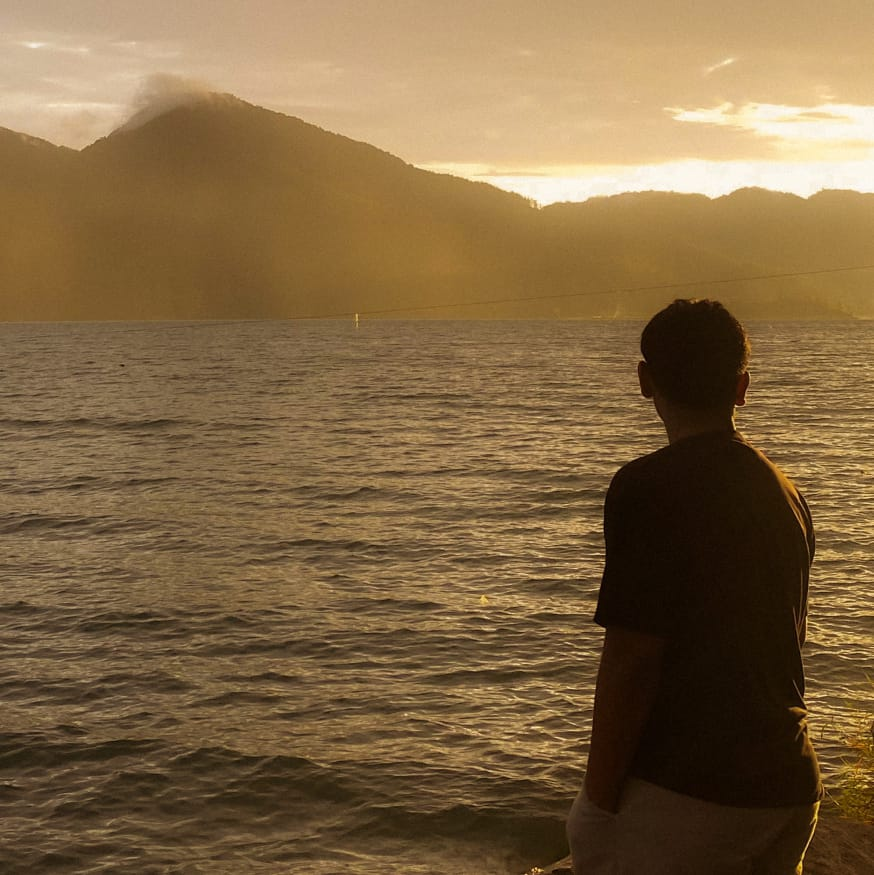

Waktu Sekarang
--:--:-- Memuat tanggal...TIK / TEKNOLOGI REKAYASA MULTIMEDIA / 2026
BUILD
MEDIA
THAT MOVES.
Jurusan TIK dengan program studi Teknologi Rekayasa Multimedia mempersiapkan mahasiswa untuk menciptakan konten digital, visual storytelling, animasi, desain interaktif, dan produk multimedia yang relevan dengan kebutuhan industri masa kini.
Pelajari Lebih Lanjut ↓T

MEDIAINNOVATION
01—26
00 / PROFIL SAYA
BIODATA
MAHASISWA.

Data Pribadi
Nama Lengkap: Muhammad Jamaluddin/MXL
- NIM: 2026583020043
- Program Studi: Teknologi Rekayasa Multimedia
- Jurusan: Teknik Informatika / TIK
- Tempat, Tgl Lahir: Aceh, 12 September 2008
- Alamat: Aceh
- Email: mldkvdkv@gmail.com
- No. HP: 089516353968
- Hobi: Futsal
01 / RIWAYAT PENDIDIKAN
JEJAK
PENDIDIKAN.
01
Sekolah Dasar
SD Negeri 5 Lhokseumawe
02
Sekolah Menengah Pertama
SMP Negeri 2 Lhokseumawe
03
Sekolah Menengah Kejuruan
SMK Negeri 1 Lhokseumawe
08 / LIVE STATUS
WAKTU
BERJALAN.
Menuju Ulang Tahun
Menghitung... 12 SeptemberWebsite Berjalan
00:00:00 Sejak halaman dibukaTIK SELECT
CREATE
IDEAS.
DELIVER IMPACT.
Mahasiswa jurusan ini dibekali keterampilan kreatif dan teknis untuk merancang komunikasi visual, merekam dan mengolah media, serta membangun pengalaman digital yang memikat audiens.
03 / ALUR
LANGKAH
MENUJU LULUS.
Pahami Dasar
Belajar dasar desain, multimedia, dan teknologi informasi agar fondasi visual serta teknis kuat sejak awal.
Latih Keterampilan
Mahasiswa mengembangkan kemampuan produksi media, editing, animasi, audio, dan pengalaman digital berbasis proyek.
Siap Berkarier
Menjadi kreator digital, editor, desainer, animator, atau profesional komunikasi visual yang siap masuk industri.
02 / KOMPETENSI
MEDIA YANG
BERMAKNA.
Program ini menggabungkan kreativitas, teknis, dan strategi komunikasi untuk menghadirkan solusi multimedia yang siap dipakai di industri desain, produksi video, animasi, branding digital, dan pengembangan konten interaktif.
06AREA KAJIAN
04SKILL INTI
01FUTURE READY
04 / VISI
Menjadi pusat pengembangan teknologi multimedia yang unggul dan berdaya saing.
Menyiapkan lulusan yang mampu menciptakan inovasi media digital, desain visual, dan pengalaman interaktif berbasis teknologi untuk kebutuhan industri dan masyarakat.
05 / MISI
Menghasilkan sumber daya manusia kreatif, inovatif, dan siap kerja.
Melalui pembelajaran berbasis industri, riset, serta penguatan karakter, mahasiswa dibekali kemampuan teknis dan profesionalisme dalam bidang multimedia.
07 / ALUMNI
Menjadi bagian dari ekosistem industri yang menjangkau berbagai sektor.
Alumni Teknologi Rekayasa Multimedia Politeknik Negeri Lhokseumawe berkontribusi di bidang media kreatif, perusahaan teknologi, agensi digital, pendidikan, dan industri budaya kreatif.